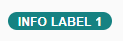

What's New in OpenUI5 1.54
With this release, OpenUI5 is upgraded from version 1.52 to 1.54.
New Controls
sap.m.ColorPalette: Provides the user with a palette containing up to 15 predefined web-standard colors, such as, Gold, Dark Magenta, and White. You can enable a Default Color button with a specified default color visible for the user. If the predefined set of colors is not sufficient, you can enable a More Colors button that opens sap.ui.unified.ColorPicker. For more information, see the API Reference and the Samples.

sap.m.TimePickerSliders: Enables the user to choose time, in different formats, from the available lists in the sliders. The control can be used inside any container. For more information, see the API Reference and the Samples.

-
sap.tnt.InfoLabel: Small non-interactive control whose purpose is to attract attention to a certain piece of information such as a state, quantity, condition. The control is vertically aligned with the OpenUI5 Input and Button control families.
InfoLabel has a renderMode property with the values loose and narrow that specify the side paddings. By default, the padding is loose, but for numeric text values, use narrow paddings.
The background and text color combinations are predefined. You can choose from 9 color schemes where the text content and choice of color depend on your preferences. The colorScheme property also accepts a digit as a value.

The size of the InfoLabel control adjusts to fit other controls, such as non-editable forms or tables, when the displayOnly property is set to true.

For more information, see the API Reference and the Samples.
Improved Features
Initialization Module for Bootstrap
<script src="/sapui5/resources/sap-ui-core.js"
id="sap-ui-bootstrap"
data-sap-ui-libs="sap.m"
data-sap-ui-oninit="module:sap/app/App"
data-sap-ui-resourceroots='{"sap.app": "my/local/path"}'
data-sap-ui-theme="sap_belize"></script>
For
more information, see Configuration Options and URL Parameters.manifest Property for Component Containers
You can now also use the "Manifest First" mechanism for component containers. For more information, see Using and Nesting Components.
OpenUI5 OData V4 Model
-
Enhancements to the adapter to use the V4 model with an OData V2 service:
-
Handling of complex filters with and, or, not, brackets, and frequently used functions including contains.
-
Support for bound operations by evaluating the V2 annotation sap:action-for.
-
Additional annotation conversions and warnings (in the console) for V2 annotations that are not converted.
-
-
Suspend and resume absolute context and list bindings. A suspended binding will not send requests to the backend.
-
Possibility to refresh a single row in an absolute list binding.
-
Support of bound functions.
-
Newly created entities in an absolute list binding are refreshed/reread automatically after the successful post to the server.
-
It is now possible to request the x-csrf token and the root metadata document earlier. This is controlled by model parameter earlyRequests.
-
Action advertisements can be accessed in bindings by specifying #<namespace>.<action>
For more information, see OData V4 Model, the API Reference, and the Sample in the Demo Kit.
Default Font
A new default font, the 72 font family that offers some legibility and accessibility enhancements, has been implemented.
Support Assistant Performance and Usability Improvements
-
Better initial loading performance - now each library should have a .supportrc file in its root folder. The purpose of this file is to serve as a metadata container to be used by the Support Assistant ruleset loader module.
For more information, see Create a Ruleset for a Library.
-
Improved perceived UI performance during initial tool loading – achieved by early and dynamic rendering of the most important UI elements and introducing a progress bar in the main screen of the Support Assistant.
-
Improved usability:
-
The selection of rules to run an analysis has been improved. Now, selecting a library selects all the rules it contains.
-
The Issues and Rules buttons are now highlighted to show the user which view is active at the moment.
-
The issue details in the Issues view have been moved from the top to the bottom of the window for better usability.
-
UI5 Inspector Updated
A new minor version 0.9.4 of the UI5 Inspector is available in the Chrome Web Store with some code adjustments and the new OpenUI5 logo.
Improved Controls
-
sap.f.DynamicPage:
-
A new areaShrinkRatio property is now available for the sap.f.DynamicPageTitle class. The property assigns shrinking ratios to the three areas in the sap.f.DynamicPageTitle (Heading, Content, and Actions). The greater value a section has the faster it shrinks when the screen size is reduced. For more information, see the API Reference.
-
A new stateChange event is introduced for the sap.f.DynamicPageTitle class. The event is fired when the state of the title (expanded or collapsed) is toggled by user interaction (by clicking/tapping on the title, by using the expand/collapse button, or by scrolling down the sap.f.DynamicPage content). For more information, see the API Reference.
-
-
sap.f.FlexibleColumnLayout: A new backgroundDesign property is added that specifies the background color of the content. The visualization of the different options depends on the used theme. For more information, see the API Reference.
-
sap.m library for List/ListBase, Table, Tree controls and tables in sap.ui.table: You can now use the context menu for these controls. For more information, see the API Reference for the contextMenu aggregation, the API Reference for the beforeOpenContextMenu event and the Sample for sap.ui.Table (and the same for ListBase), the Sample for sap.m.Table, and the Sample for List.
-
sap.m library for List, Table, Tree controls: You can now use drag and drop for these controls with aggregation dragDropConfig. For more information, see the API Reference for the dragDropConfig aggregation, the Sample for Table, and the Sample for Tree.
-
sap.m.CheckBox:
-
A new wrapping property is now available that determines whether the text in the control's label is wrapped. When set to false (default), the label's text is truncated with an ellipsis at the end.
-
A new displayOnly property is added that enables visually distinguishable rendering of the control in gray. When set to true, the control becomes non-focusable and is not part of the tab chain. The displayOnly state is intended to be used in form controls only, and it is different from the read-only state.
For more information, see the API Reference and the Sample.
-
-
sap.m.DateTimeField: With the new initialFocusedDateValue property, you can now set a JavaScript Date object to define the initially focused date/time when a picker popup is opened. This can be used in the context of sap.m.TimePicker, sap.m.DatePicker, or sap.m.DateTimePicker and it only takes into account the time part, the date part, or both parts of the JavaScript Date object, respectively. For more information, see the API Reference.
-
sap.m.IconTabBar:
-
Updated drag and drop feature for visible tab areas - the drag and drop feature has a new visual indication, including a drop area indicator and a ghost element. The keyboard handling is also updated.
Implemented drag and drop in the overflow area of IconTabBar – the drag and drop feature is added in the overflow list of sap.m.IconTabBar. Rearranging tabs using the keyboard is also enabled in the overflow.
For more information, see the API Reference and the Sample.
-
-
sap.m.Label: A new vAlign property has been added. It specifies the vertical alignment of sap.m.Label. To preserve the current behavior of the control, the default value of the property is inherit. From now on, app developers can set vertical alignment of sap.m.Label with the vAlign property using its get/set method, which accepts values from the sap.ui.core.VerticalAlign interface. For more information, see the API Reference.
-
sap.m.Link: A new validateUrl property has been added that defines whether the link target URI should be validated. If validation fails, the value of the href property will still be set, but it will not be applied to the DOM tree. For more information, see the API Reference.
-
sap.m.MessagePage:
-
With the new enableFormattedText Boolean property, you can now enable the text that is set in the description property to be rendered as HTML. The new property takes effect only when the customDescription aggregation is not set. For a list of supported HTML tags, see the API Reference for sap.m.FormattedText.
-
A new buttons aggregation is implemented that allows you to add buttons (of type sap.m.Button) to the sap.m.MessagePage. The buttons are centered under the description of the MessagePage. If more buttons are added, and enough space is available , they will be rendered on two or more lines.
For more information, see the API Reference and the Sample.
-
-
sap.m.ObjectStatus: The control now has the option to have an active icon and text so the user can click/tap on them. To do this, set the new active property to true. There is also a new press event that fires when the user clicks/taps on active text/icon. For more information, see the API Reference and the Sample.
-
sap.m.OverflowToolbar: The sap.m.Label control is now added to the list of controls that can be moved to the overflow area of sap.m.OverflowToolbar.
-
sap.m.PlanningCalendar:
-
A new getSelectedAppointments method is implemented which holds the IDs of the selected appointments. If no appointments are selected, an empty array is returned. This is an addition to the appointmentSelect event and its appointment parameter where you can listen for the value of the selected property. For more information, see the API Reference and the Sample.
-
The control now provides the possibility for the user to drag and drop appointments in one PlanningCalendarRow. You can enable this behavior with the enableAppointmentDragAndDrop Boolean property. When an appointment is dropped over a drop target area, an appointmentDrop event is fired. For more information, see the API Reference and the Sample.
-
For large screens, the date navigation arrows are now displayed closer to the date picker button to improve the experience of date navigation in the sap.m.PlanningCalendar.
-
With the use of the new stickyHeader property, you can now enable the header area to remain visible (fixed on top) when the rest of the content is scrolled out of view. For more information, see the API Reference and the Sample.
Until now, the appointments in sap.m.PlanningCalendar were sorted vertically according to their duration with the longer ones being on top. With the introduction of the new API method setCustomAppointmentsSorterCallback, you can now sort the appointments in a custom way. For more information, see the API Reference and the Sample.
-
-
sap.m.StepInput:
-
You can now add a description and align the text with the use of the new properties: description, fieldWidth, and textAlign. With the description property, you can display text after the input field. The fieldWidth property specifies how much of the available space is taken from the field and how much from the description (equal by default). The textAlign property enables you to choose how the numbers in the input field are aligned. For more information, see the API Reference.
-
The control now increases the speed in which the value changes when the user presses and holds the increase or decrease buttons.
-
With the new stepMode property, you can now decide which calculation method to use for the value when the user chooses the increase/decrease buttons. The AdditionAndSubtraction type simply adds/subtracts the current step to/from the value, while the Multiple type increases/decreases the value to the closest number that is divisible by the step. For more information, see the API Reference and the Sample.
-
-
sap.m.TimePicker:
-
You can now set not only a 00:00 time value but also 24:00 if you need the time to represent the end of the day. To enable this option, set the new support2400 Boolean property to true. For more information, see the API Reference and the Sample.
-
With the use of the new maskMode property, you can now disable the assistance that is provided for the sap.m.TimePicker input. This enables variable length time formats, for example AM/PM formats in different languages. For more information, see the API Reference.
-
-
sap.m.Toolbar: A new style property has been added that defines the visual style of the sap.m.Toolbar. The available styles are theme-dependent and can differ based on the currently used theme. For more information, see the API Reference and the Sample.
-
sap.m.WizardStep: A new Boolean property called optional has been added. When set to true, it marks a step with the text “Optional” under the step’s title. The new property only affects the visual appearance of the step and does not provide any behavioral changes to the control. For more information, see the API Reference.
-
sap.ui.layout.form.Form: Labels in form controls are now wrapped automatically using the wrapping property of sap.m.label. This prevents long labels from being cut off. For more information, see the Sample.
-
sap.ui.table.TreeTable: You can now expand and collapse multiple rows at once. For more information, see the API Reference for expand and the API Reference for collapse and the Sample.
-
sap.ui.unified.CalendarLegend: With the use of the new standardItems property, you now have the option to configure which of the standard items related to the calendar days (today, selected, working, and non-working) to display. For more information, see the API Reference and the Sample.
-
sap.ui.unified.Currency: The new stringValue property enables you to display very large numbers (16+ characters) without losing precision. For more information, see the API Reference and the Sample.
Documentation
We have a new tutorial: OData V4.
We have reworked the Data Binding section under Essentials.
We received feedback that many examples throughout the documentation were outdated and still used the old OData model, the deprecated sap.ui.commons library, or used the deprecated jQuery.sap.require syntax. We are currently working on updating all the occurrences, and you may already notice that we have made a big step forward in this version. Nevertheless, there will still be topics we could not yet update - please be patient and allow us some more time to finish this task.
Demo Kit Improvements
Information about downloading OpenUI5 can now be accessed easily through the new Download button on the home page:

A new API Reference button is now available when a sample page is loaded. It links directly to the control's API information:

In the API Reference, information is now available if an aggregation is used by default:
-
Browser back button functionality is available for the API Reference as the navigation steps are now persisted in the browser history.
-
Performance improvements: We have enabled lazy loading for the methods in the API Reference and implemented other various optimizations. The performance of the app has improved as a result.